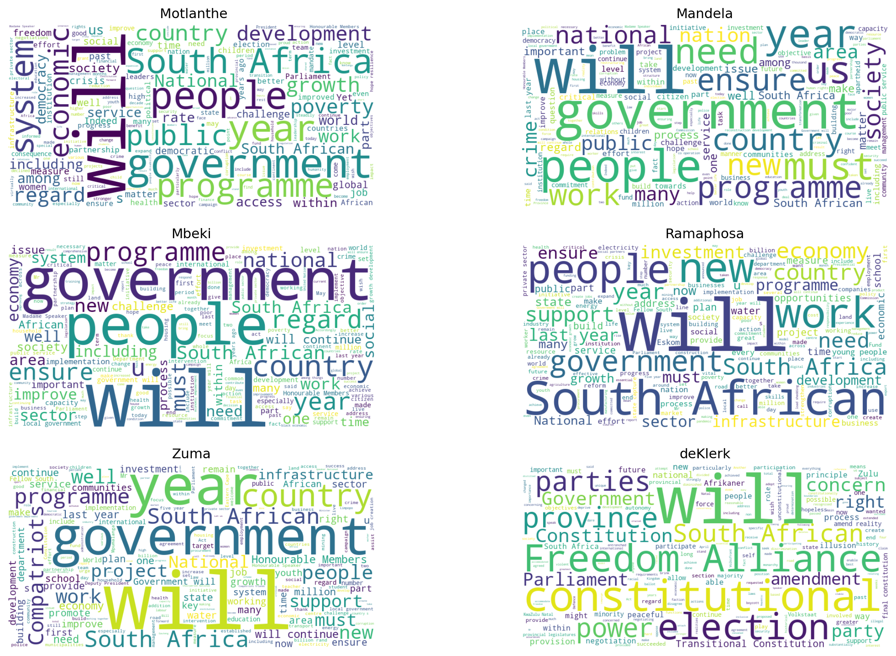

from transformers import AutoTokenizer, AutoModelForSequenceClassification, AutoConfigimport numpy as npfrom scipy.special import softmax
HFM1 = pd.read_csv("HFM1_SentimentData.csv")presidents_order = ['Mandela', 'deKlerk', 'Mbeki', 'Motlanthe', 'Zuma', 'Ramaphosa']mean_scores_per_president = HFM1.groupby('Presidents')['Sentiment_Score'].mean()adjusted_presidents_order = ['deKlerk'] + [president for president in presidents_order if president !='deKlerk']mean_scores_reordered = mean_scores_per_president.reindex(adjusted_presidents_order)# Plotting the reordered mean sentiment scoresplt.figure(figsize=(12, 7))mean_scores_reordered.plot(kind='bar', color='skyblue')plt.title('Mean Sentiment Scores per President')plt.xlabel('President')plt.ylabel('Mean Sentiment Score')plt.axhline(0, color='red', linestyle='--') #line at y=0 for referenceplt.tight_layout()plt.show()
colors = {'negative': '#FF9999', 'neutral': '#99CCFF', 'positive': '#99FF99'}sentiment_counts = HFM1.groupby('Presidents')['Predicted_Label'].value_counts(normalize=True).unstack().fillna(0)sentiment_counts.reindex(adjusted_presidents_order).plot(kind='bar', stacked=True, figsize=(12,7), color=[colors[col] for col in sentiment_counts.columns])plt.title('Sentiment Distribution per President')plt.ylabel('Percentage')plt.xlabel('President')plt.legend(title='Sentiment')plt.tight_layout()plt.show()
from matplotlib.colors import LinearSegmentedColormapfrom matplotlib import cmfrom matplotlib import cmdef plot_for_president_gradient(president, df):# Filter dataframe for the selected president president_df = df[df['Presidents'] == president]# Sorting data by order (using the 'Unnamed: 0' column as the order) president_df = president_df.sort_values(by='Unnamed: 0')# Normalize the scores to [0,1] for colormap norm = plt.Normalize(-1, 1)# Custom colormap: Red -> Gray -> Blue custom_cmap = LinearSegmentedColormap.from_list("custom", ["red", "gray", "blue"])# Plotting with a black background and custom colormap fig, ax = plt.subplots(figsize=(10, 5)) bars = ax.bar(np.arange(len(president_df)), president_df['Sentiment_Score'], color=custom_cmap(norm(president_df['Sentiment_Score'])), width=1.0) ax.set_title(f'Sentiment Score over time for President {president}') ax.set_xlabel('Order of Sentences') ax.set_ylabel('Sentiment Intensity') ax.axhline(0, color='white',linewidth=0.5) ax.grid(axis='y', color='white', linestyle='--', linewidth=0.5) ax.set_facecolor('black') fig.colorbar(cm.ScalarMappable(norm=norm, cmap=custom_cmap), ax=ax, label='Sentiment Score') plt.show()
presidents_list = HFM1['Presidents'].unique()def plot_in_grid(president, ax):"""Plot sentiment scores for a given president on a given axes.""" president_df = HFM1[HFM1['Presidents'] == president] president_df = president_df.sort_values(by='Unnamed: 0')# Normalize the scores for colormap norm = plt.Normalize(-1, 1) custom_cmap = LinearSegmentedColormap.from_list("custom", ["red", "gray", "blue"]) bars = ax.bar(np.arange(len(president_df)), president_df['Sentiment_Score'], color=custom_cmap(norm(president_df['Sentiment_Score'])), width=1.0) ax.set_title(f'{president}') ax.axhline(0, color='white', linewidth=0.5) ax.grid(axis='y', color='white', linestyle='--', linewidth=0.5) ax.set_facecolor('black')# Creating a 2x3 grid plot for all presidentsfig, axes = plt.subplots(2, 3, figsize=(18, 10))fig.suptitle('Sentiment Scores over time for each President', fontsize=16)for president, ax inzip(adjusted_presidents_order, axes.ravel()): plot_in_grid(president, ax)# Adjust layoutplt.tight_layout()plt.subplots_adjust(top=0.90)plt.show()

pastel_colors = ['#FFB3BA', '#FFDFBA', '#FFFFBA', '#BAFFC9', '#BAE1FF', '#D9BAFF']def plot_histogram(president, color, ax):"""Plot histogram of sentiment scores for a given president on a given axes.""" president_df = HFM1[HFM1['Presidents'] == president] ax.hist(president_df['Sentiment_Score'], bins=30, color=color, edgecolor='white') ax.set_title(f'{president}') ax.set_xlabel('Sentiment Score') ax.set_ylabel('Frequency') ax.grid(axis='y', linestyle='--', linewidth=0.5)# Creating a 2x3 grid plot for histograms of all presidentsfig, axes = plt.subplots(2, 3, figsize=(18, 10))fig.suptitle('Distribution of Sentiment Scores for each President', fontsize=16)for president, color, ax inzip(adjusted_presidents_order, pastel_colors, axes.ravel()): plot_histogram(president, color, ax)# Adjust layoutplt.tight_layout()plt.subplots_adjust(top=0.90)plt.show()